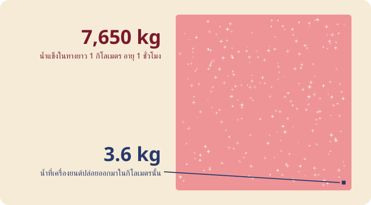

ลองทำทางเอง
มีสามอย่างที่ตัดสิน อากาศเย็นแค่ไหน ชื้นแค่ไหน และเครื่องยนต์ทิ้งความร้อนเท่าไร ลองเลื่อนดู
อ่านกราฟ เส้นโค้งสีทองคืออากาศอิ่มตัวเมื่อเทียบกับน้ำ เส้นประสีชมพูคืออากาศอิ่มตัวเมื่อเทียบกับน้ำแข็ง ซึ่งเต็มเร็วกว่า ไอเสียออกจากเครื่องยนต์ทั้งร้อนและชื้น อยู่ไกลขึ้นไปทางขวาบน แล้วผสมกับอากาศของคุณตามเส้นตรง ถ้าเส้นโผล่เหนือเส้นสีทอง จะเกิดหยดน้ำและแข็งตัวทันที นั่นคือทาง ถ้าจุดของคุณอยู่เหนือเส้นประสีชมพู น้ำแข็งก็ไม่มีเหตุให้หายไป ทางจึงค้าง
G = EI · cp · p ⁄ ( ε · Q · (1 − η) )
อ่านว่า G คือความชันของเส้นตรง EI คือน้ำ 1.23 กก. ต่อน้ำมัน 1 กก. cp คือความร้อนที่ใช้ทำให้อากาศอุ่น p คือความดันอากาศที่ความสูงของเครื่องบิน ε คือ 0.622 ไอน้ำเบากว่าอากาศเท่านี้ Q คือความร้อนในน้ำมัน 1 กก. η คือส่วนของความร้อนที่ใช้ผลักเครื่องบิน ที่ 34,000 ฟุต สูตรนี้บอกว่าจะเกิดทางเมื่อเย็นกว่า -50.6 °C ในอากาศแห้งสนิท และเย็นกว่า -41.1 °C ในอากาศอิ่มตัว
สามลำ สามความสูง
แต่ละเส้นคือเครื่องบินคนละความสูง อยู่ในชั้นอากาศของตัวเอง

เครื่องยนต์ที่ดีกว่าทำให้เกิดทาง
นักวิจัยเยอรมันให้แอร์บัส A340 กับโบอิ้ง 707 บินปีกชิดปีก ความสูงเดียวกัน อากาศเดียวกัน แล้วดูจากเครื่องบินลำที่สาม A340 ที่เครื่องยนต์ประหยัดกว่าทิ้งทาง 707 ไม่ทิ้งเลย เครื่องยนต์ที่เปลี่ยนความร้อนเป็นแรงผลักได้มากกว่า ปล่อยไอเสียที่เย็นกว่าแต่มีน้ำเท่าเดิม เลยอิ่มตัวเร็วกว่า
เครื่องบินแบกไหวไหม

เครื่องบินลำตัวแคบเผาน้ำมันราว 2,400 กก. ต่อชั่วโมง ได้น้ำ 3.6 กก. ทุกกิโลเมตรที่บิน หนึ่งชั่วโมงต่อมา ทางที่แผ่ออกอาจกว้าง 2 กม. หนา 500 ม. ที่ −50 °C และอากาศเกินจุดอิ่มตัวเทียบน้ำแข็ง 20% อากาศทุกลูกบาศก์เมตรจะคายน้ำแข็งราว 8 มิลลิกรัมให้ผลึกที่เครื่องบินทิ้งไว้ คูณออกมาได้น้ำแข็ง 7,650 กก. ในกิโลเมตรนั้น เครื่องยนต์ให้แค่ 3.6 กก. ที่เหลือมาจากท้องฟ้า
ถังบรรทุกทำแบบนี้ไม่ได้ น้ำหนักบรรทุกทั้งลำราว 20 ตัน เติมทางแบบนั้นได้แค่ 2.6 กม. รายงาน IPCC ปี 1999 เขียนไว้ว่า น้ำแข็งในทางใหม่โตจนมากกว่าน้ำจากเครื่องบินเกินร้อยเท่า
ทางเก่าที่แผ่กว้าง
ทางที่อายุหลายชั่วโมงแผ่ออกเป็นเมฆบาง อากาศวันนั้นถือน้ำไว้เกินกว่าที่น้ำแข็งจะทนได้อยู่แล้ว
ตาราง กากบาท และลายทาง

ทางชี้ไปทางที่เครื่องบินมุ่งไป อ่านทิศได้จากท้องฟ้า
เครื่องบินโดยสารบินตามทางหลวงบนฟ้าที่เรียกว่าเส้นทางบินเจ็ต ระหว่าง 18,000 ถึง 45,000 ฟุต สองเส้นทางตัดกันเป็นกากบาท เส้นทางที่คนบินเยอะเป็นลายทางขนานห่างกันไม่กี่นาที ลมพัดทุกเส้นไปด้านข้าง และแต่ละเส้นอายุไม่เท่ากัน เลยเลื่อนไปไม่เท่ากัน เส้นที่เก่าที่สุดกว้างที่สุดและไปไกลที่สุดตามลม วันที่ฟ้าเป็นตารางคือวันที่อากาศชื้นพอจะเก็บทุกทางไว้ ภาพข้างบนวาดจากกฎนี้อย่างเดียว สามเส้นทาง ราวครึ่งชั่วโมงต่อลำ ลมคงที่
ทั้งผืนฟ้า
ทางเหนือสเปนและโปรตุเกส ถ่ายจากดาวเทียมเทอร์ราของนาซา เส้นทางบินเจ็ต วาดด้วยน้ำแข็ง
ทางก่อนยุคเครื่องบินเจ็ต
เครื่องบิน B-17 ของกองบินทิ้งระเบิดที่ 390 เหนือยุโรป เครื่องบินขับไล่คุ้มกันวาดทางวนอยู่ข้างบน เครื่องยนต์ลูกสูบก็พ่นไอน้ำเหมือนกัน
คำถาม

แนนทำไมลำหนึ่งทิ้งทางยาว แต่อีกลำไม่มีเลย

เบียร์เพราะบินคนละความสูง และอากาศชื้นมาเป็นชั้น ๆ แผงด้านบนแสดงสามความสูง ซึ่งมักไม่ตรงกัน เครื่องยนต์ก็มีผลด้วย ดูข้างล่าง
แนนเมื่อก่อนทางไม่ค้างนานขนาดนี้
เบียร์ปี 1943 ก็ค้าง (ดูเครื่องบินทิ้งระเบิดข้างบน) ตอนนี้เครื่องบินเยอะขึ้น วันที่ 23 กรกฎาคม 2026 มีเที่ยวบินพาณิชย์ 153,359 เที่ยว มากที่สุดเท่าที่เคยมี และเครื่องยนต์รุ่นใหม่ทำให้เกิดทางในอากาศที่อุ่นกว่า
แนนแล้วรูปถังในเครื่องบินล่ะ
เบียร์ถังน้ำถ่วงน้ำหนักสำหรับบินทดสอบ คลังภาพของโบอิ้งก็เขียนไว้แบบนั้น บนเครื่องทดสอบแอร์บัส A350 แต่ละถังจุน้ำราว 300 กก. สูบไปหน้าไปหลังเพื่อย้ายจุดสมดุล
แนนตรวจดินแล้วเจออะลูมิเนียมกับแบเรียม
เบียร์อะลูมิเนียมมีราว 8% ของเปลือกโลก เป็นโลหะที่มีมากที่สุด แบเรียมมีราว 628 ส่วนในล้านส่วน ตรวจดินที่ไหนก็เจอทั้งสองอย่าง
แนนมีสิทธิบัตรและงานวิจัยเรื่องพ่นสารบนฟ้า
เบียร์มีจริง แต่เป็นความคิดบนกระดาษ แบบที่เสนอไว้ต้องพ่นที่ความสูงราว 20 กม. สูงกว่าที่เครื่องบินโดยสารบิน ด้วยเครื่องบินที่ยังไม่มีใครสร้าง การทดสอบด้วยบอลลูนของฮาร์วาร์ดถูกยกเลิกเมื่อมีนาคม 2024 ก่อนได้ขึ้นบิน
แนนกองทัพอากาศเคยเขียนเรื่องครองสภาพอากาศ
เบียร์เป็นรายงานของนักศึกษาปี 1996 ที่จินตนาการถึงปี 2025 หน้าแรกเขียนไว้ว่ามีเรื่องสมมติ และไม่ใช่นโยบายของกองทัพอากาศ
แนนการดัดแปรสภาพอากาศมีจริงใช่ไหม
เบียร์มีจริง ฝนหลวงบินมาตั้งแต่ปี 1969 โปรยเกลือแถวฐานเมฆ น้ำแข็งแห้งใต้ฐานเมฆ ซิลเวอร์ไอโอไดด์ที่ยอดเมฆ สูงสุดราว 21,500 ฟุต ใช้กับเมฆที่มีอยู่แล้ว ทางที่ 35,000 ฟุตบนฟ้าใสเป็นคนละเรื่อง
แนนมีใครพูดแบบนี้อีกบ้าง
เบียร์ปี 2016 มีการถามนักเคมีบรรยากาศและนักธรณีเคมี 77 คน 76 คนไม่เคยเห็นหลักฐานโครงการพ่นสารลับ ปี 2025 สำนักงานปกป้องสิ่งแวดล้อมสหรัฐฯ ซึ่งผู้บริหารหยิบคำถามนี้ขึ้นมาเอง เขียนว่าไม่รู้ว่าเคยมีทางไหนถูกทำขึ้นโดยตั้งใจเพื่อดัดแปรอากาศเหนือสหรัฐฯ
แนนแล้วทางเครื่องบินมีผลอะไรไหม
เบียร์มี เรื่องความร้อน เมฆจากทางเก็บความร้อนไว้ ราว 57 จาก 101 มิลลิวัตต์ต่อตารางเมตรที่การบินทำให้โลกร้อนในปี 2018 มากกว่าคาร์บอนไดออกไซด์ของการบินเอง ตอนนี้สายการบินกำลังทดลองบินเลี่ยงอากาศที่ทำให้เกิดทาง เรื่องนี้แหละที่น่าคุยกัน
แนนจะพิสูจน์เองได้ยังไง
เบียร์ลองทำนาย อ่านแผงด้านบน จดไว้ว่า "บ่ายสามโมงทางยาว" แล้วแหงนดูตอนบ่ายสามโมง โครงการพ่นสารคงไม่เดินตามพยากรณ์ความชื้นของพรุ่งนี้
ทางจากปีก
อากาศที่วิ่งเร็วผ่านปีกความดันลดและเย็นลง อากาศชื้นเลยเป็นเมฆชั่วครู่ พ้นปีกก็หายไป
ส่งอันนี้แทนการเถียง
แหล่งข้อมูล
- Schumann 1996, On conditions for contrail formation from aircraft exhausts, Meteorol. Z. 5:4–23
- Appleman 1953, The formation of exhaust condensation trails by jet aircraft, BAMS 34:14–20
- Murphy & Koop 2005, vapour pressures of ice and supercooled water, QJRMS 131:1539
- pycontrails: Schmidt–Appleman code and Jet A constants
- Kärcher 2018, Formation and radiative forcing of contrail cirrus, Nature Communications 9:1824
- IPCC 1999, Aviation and the Global Atmosphere, §3.4
- Schumann, Busen & Plohr 2000, propulsion efficiency and contrail formation, J. Aircraft 37(6)
- Shearer, West, Caldeira & Davis 2016, expert survey, Environ. Res. Lett. 11:084011
- EPA, FAA, NASA, NOAA 2000, Aircraft Contrails Factsheet
- EPA, FAA, NOAA 2025, Contrails Fact Sheet
- EPA, Geoengineering: frequent questions
- Boeing Images: 747-100 flight test ballast
- Lead Stories 2023: barrels are ballast tanks (A350)
- USGS: aluminium in the crust
- USGS: barium in the crust
- Smith & Wagner 2018, stratospheric aerosol injection tactics and costs, Environ. Res. Lett. 13:124001
- Harvard Salata Institute: an update on SCoPEx, March 2024
- House et al. 1996, Weather as a Force Multiplier: Owning the Weather in 2025
- Royal Rainmaking patent EP1491088A1
- Thai MFA: The Royal Rainmaking Project
- Department of Royal Rainmaking and Agricultural Aviation
- Lee et al. 2021, aviation's contribution to climate forcing, Atmos. Environ. 244:117834
- American Airlines 2023: contrail-avoidance trial
- Airways Magazine: Flightradar24 record day, July 2026
- FAA Aeronautical Information Manual 5-3-4: jet routes
- Wikipedia: Chemtrail conspiracy theory
- Open-Meteo forecast API (ECMWF IFS), CC BY 4.0
- adsb.lol live planes, ODbL
- Wikimedia Commons
ภาพถ่ายจากวิกิมีเดียคอมมอนส์ ระบุผู้ถ่ายบนภาพ ภาพวาดและโค้ด: NaNoBotCo แนนกับเบียร์วาดโดย NaNoBotCo